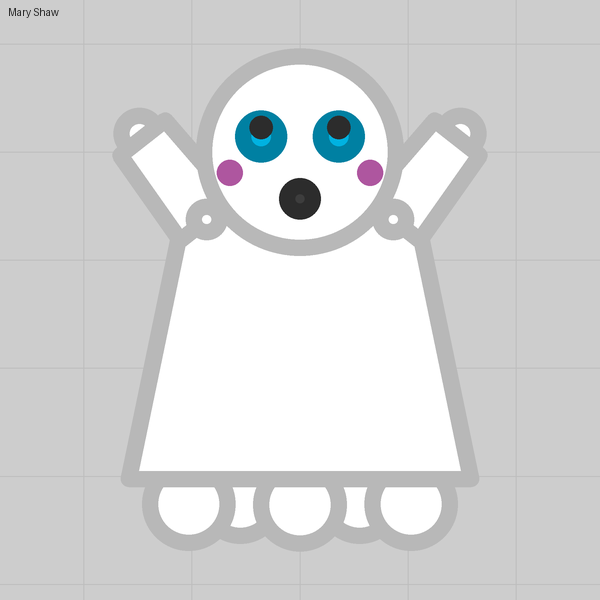
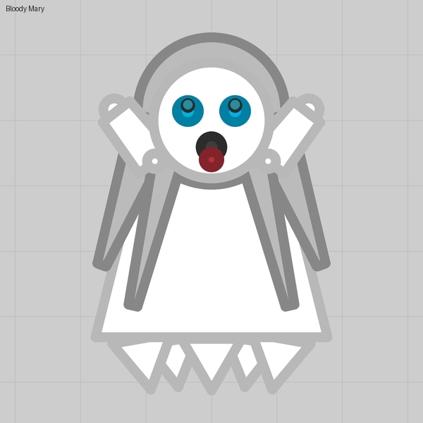

Lesson 14
Ghosts that fade
Invisibility is three numbers, and parts marked Visible while invisible stay drawn while the rest of the tank is gone.
What you see
A tank that fades out when it stands still, leaving two yellow eyes hanging in the air. Move or fire and it is back.
The trick
The Invisibility section on the tank: Invisible on, Time to vanish (seconds from fully visible to gone while idle), Reveal distance (enemies this close still see it faintly) and Hits to reveal. That is the stock Stalker. The ghostly part is Visible while invisible on the eye parts, which keeps them drawn while the body fades.
Numbers that matter
| Field | Stalker | Landmine | Notes |
|---|---|---|---|
| Time to vanish | 1.3 s | 10 s | The editor accepts 0.1 to 60 s |
| Reveal distance | 450 | 650 | 0 never reveals |
| Hits to reveal | 7 | 7 | The slider's far end is never |
Gotchas
- Shots never fade. A barrel on Always fire (a trail, a pumping leg) keeps marking where a faded tank lies, so keep auto-fire off a tank that hides, or make that the joke.
- Only parts can stay visible, not barrels or turrets. Draw the glint with parts.
- A faded tank is still there: it blocks, it takes body damage, and the lobby still counts its budget.
Where we used it

